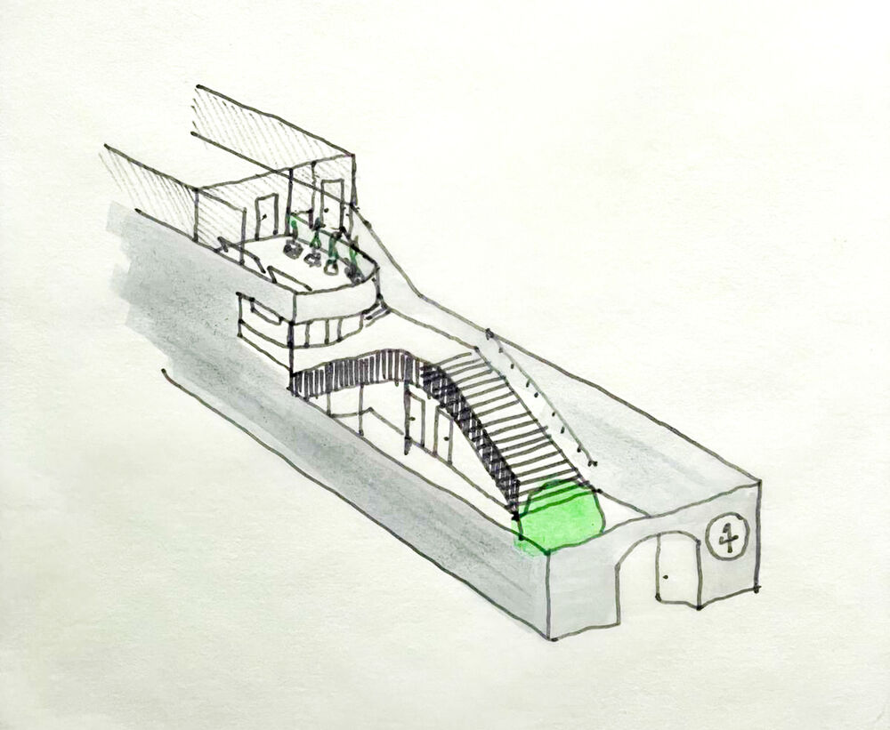
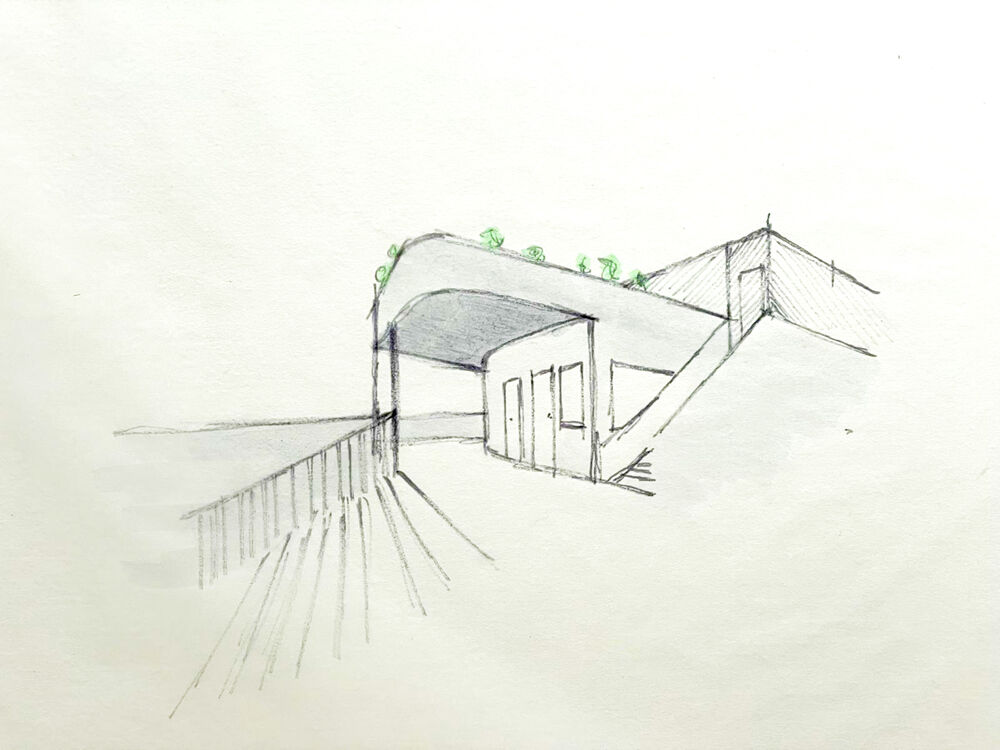
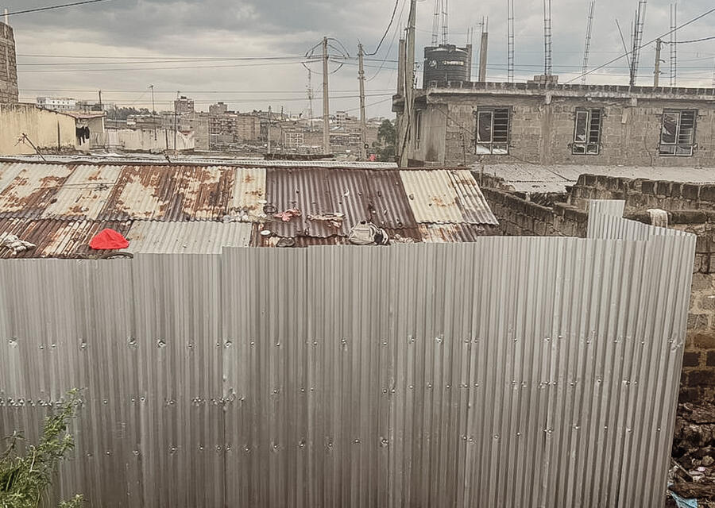
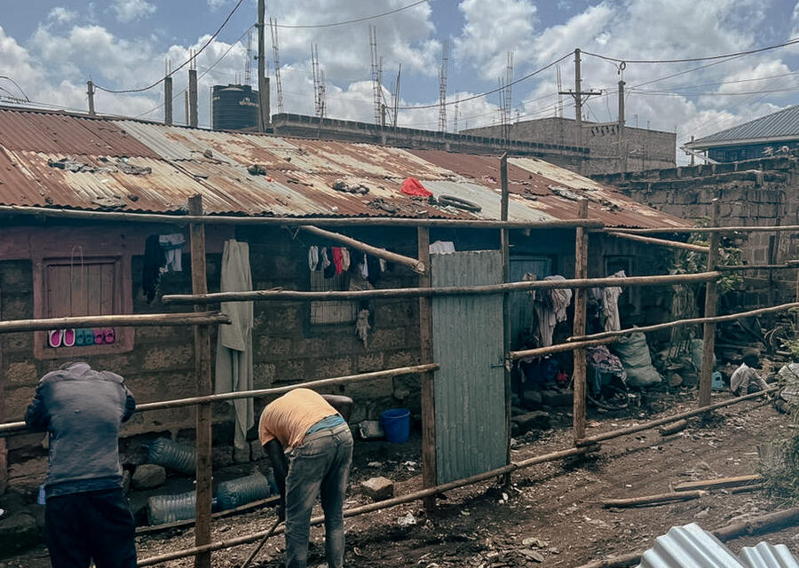
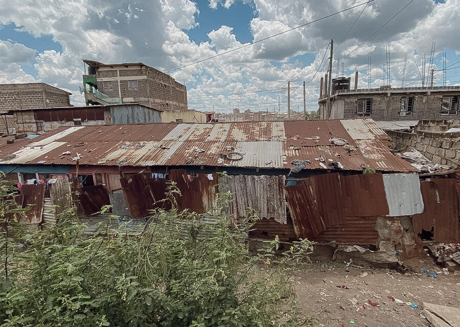

Vom Grundstück zum Herzstück von Korogocho – begleite jeden Schritt.
Dank einer Großspende konnten wir mitten im Herzen von Korogocho ein rund 400 m² großes Grundstück erwerben. Hier soll ein Zentrum für Kinder und Jugendliche entstehen: ein Ort zum Kindsein, zum Lernen und Arbeiten für eine bessere Zukunft, ein Ort der Gemeinschaft und des Zusammenkommens. Geplant sind unter anderem eine Bibliothek, ein Unterrichtsraum, ein Nähraum, eine Küche, ein Büro, Toiletten, ein Spielraum und ein Außenbereich.
Unsere Träume sind groß und die Pläne werden konkreter: Ein zweiter Architekten-Entwurf wird derzeit ausgearbeitet, Marion steht bereits in Kontakt mit einem ortsansässigen Bauunternehmer, und die Prüfung für eine Förderung im Kleinprojektefonds läuft.


Dank einer Großspende konnten wir mitten in Korogocho ein Grundstück erwerben – der Grundstein für alles Weitere.
Die Abrissarbeiten auf dem Grundstück haben begonnen.
Ein zweiter Architekten-Entwurf wird derzeit ausgearbeitet. Parallel laufen Gespräche mit einem ortsansässigen Bauunternehmer.
Die Prüfung für eine Förderung im Kleinprojektefonds läuft – darüber hinaus zählt jede Unterstützung.
Sobald es losgeht, seht ihr hier Fotos und Updates direkt von der Baustelle.


